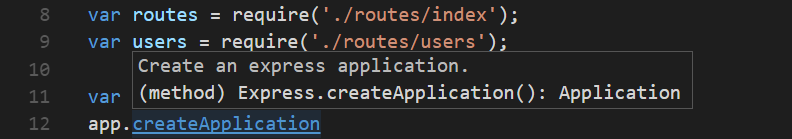
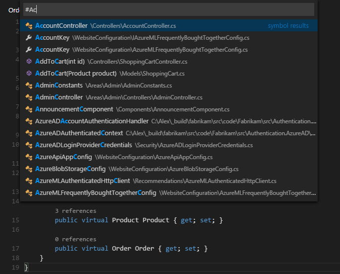
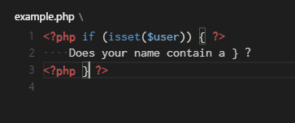
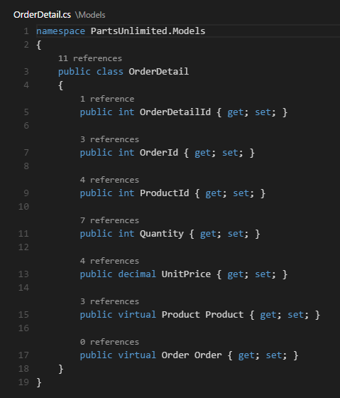

Code Navigation
Visual Studio Code has a high productivity code editor which, when combined with programming language services, gives you the power of an IDE and the speed of a text editor. In this topic, we'll first describe VS Code's language intelligence features (suggestions, parameter hints, smart code navigation) and then show the power of the core text editor.
Quick File Navigation
The Explorer is great for navigating between files when you are exploring a project. However, when you are working on a task, you will find yourself quickly jumping between the same set of files. VS Code provides two powerful commands to navigate in and across files with easy-to-use key bindings.
Hold kbstyle(Ctrl) and press
kbstyle(Tab) to view a list of all files open in
an editor group. To open one of these files, use
kbstyle(Tab) again to pick the file you want to
navigate to, then release kbstyle(Ctrl) to open
it.

Alternatively, you can use
kb(workbench.action.navigateBack) and
kb(workbench.action.navigateForward) to navigate
between files and edit locations. If you are jumping around
between different lines of the same file, these shortcuts
allow you to navigate between those locations easily.
Tip: You can open any file by its name when you type
kb(workbench.action.quickOpen)(Quick Open).
Go to Definition
If a
language
supports it, you can go to the definition of a symbol by
pressing kb(editor.action.goToDeclaration).
If you press kbstyle(Ctrl) and hover over a
symbol, a preview of the declaration will appear:

Tip: You can jump to the definition with
kbstyle(Ctrl+Click)or open the definition to the side withkbstyle(Ctrl+Alt+Click).
Go to Type Definition
Some
languages
also support jumping to the type definition of a symbol by
running the Go to Type Definition command
from either the editor context menu or the
Command Palette. This will take you to the
definition of the type of a symbol. The command
editor.action.goToTypeDefinition is not bound to
a keyboard shortcut by default but you can add your own custom
keybinding.
Go to Implementation
Languages
can also support jumping to the implementation of a symbol by
pressing kb(editor.action.goToImplementation).
For an interface, this shows all the implementors of that
interface and for abstract methods, this shows all concrete
implementations of that method.
Go to Symbol
You can navigate symbols inside a file with
kb(workbench.action.gotoSymbol). By typing
kbstyle(:) the symbols will be grouped by
category. Just press kbstyle(Up) or
kbstyle(Down) and navigate to the place you want.

Open symbol by name
Some languages support jumping to a symbol across files with
kb(workbench.action.showAllSymbols). Just type
the first letter of a type you want to navigate to, regardless
of which file contains it, and press
kbstyle(Enter).

Peek
We think there's nothing worse than a big context switch when
all you want is to quickly check something. That's why we
support peeked editors. When you execute a
Find All References search (via
kb(editor.action.referenceSearch.trigger)), or a
Peek Definition (via
kb(editor.action.previewDeclaration)), we embed
the result inline:

You can navigate between different references in the peeked editor and make quick edits right there. Clicking on the peeked editor filename or double-clicking in the result list will open the reference in the outer editor.
Tip: Additionally, the peek window is closed if you press
kbstyle(Escape)or double-click in the peek editor region. You can disable this behavior with theeditor.stablePeeksetting.
Bracket matching
Matching brackets will be highlighted as soon as the cursor is near one of them.

Tip: You can jump to the matching bracket with
kb(editor.action.jumpToBracket)
Reference information
Some languages like C# support inline reference information, that is updated live. This allows you to quickly analyze the impact of your edit or the popularity of your specific method or property throughout your project:

Tip: Directly invoke the Find All References action by clicking on these annotations.
Tip: Reference information shown in CodeLens can be turned on or off through the
editor.codeLenssetting.
Rename symbol
Some languages support rename symbol across files. Press
kb(editor.action.rename) and then type the new
desired name and press kbstyle(Enter). All usages
of the symbol will be renamed, across files.

Errors & Warnings
Warnings or Errors can be generated either via configured tasks, by rich language services, or by linters, that constantly analyze your code in the background. Since we love bug-free code, warnings and errors show up in multiple places:
- In the status bar, there is a summary of all errors and warnings counts.
-
You can click on the summary or press
kb(workbench.actions.view.problems)to display the PROBLEMS panel with a list of all current errors. - If you open a file that has errors or warnings, they will be rendered inline with the text and in the overview ruler.

Tip: To loop through errors or warnings in the current file, you can press
kb(editor.action.marker.next)orkb(editor.action.marker.prev)which will show an inline zone detailing the problem and possible code actions (if available):

Code Action
Warnings and Errors can provide Code Actions (also known as Quick Fixes) to help fix issues. These will be displayed in the editor in the left margin as a lightbulb. Clicking on the lightbulb will either display the Code Action options or perform the action.
Next Steps
Now that you know how the editor works, time to try a few other things...
- Intro Video - Code Editing - Watch an introductory video on code editing features.
- User Interface - In case you missed a basic orientation around VS Code.
- Key Bindings - Learn how to modify key bindings to your preference.
- Debugging - This is where VS Code really shines.